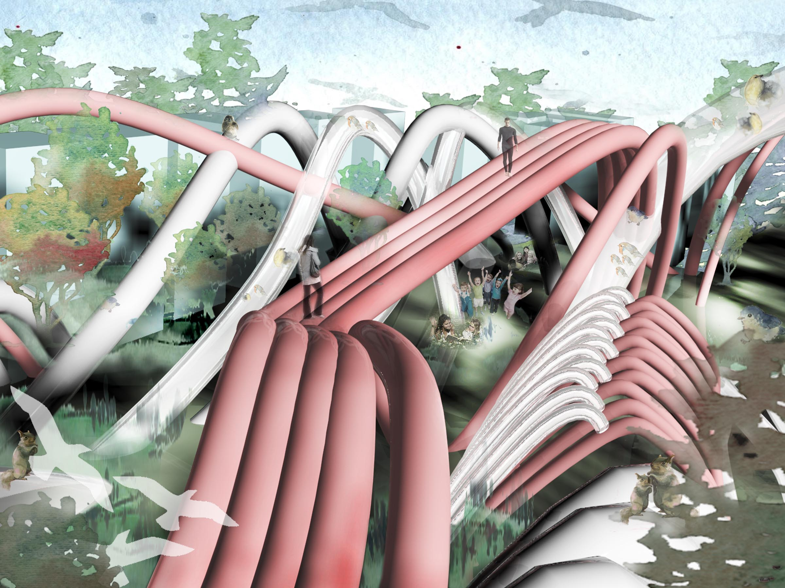
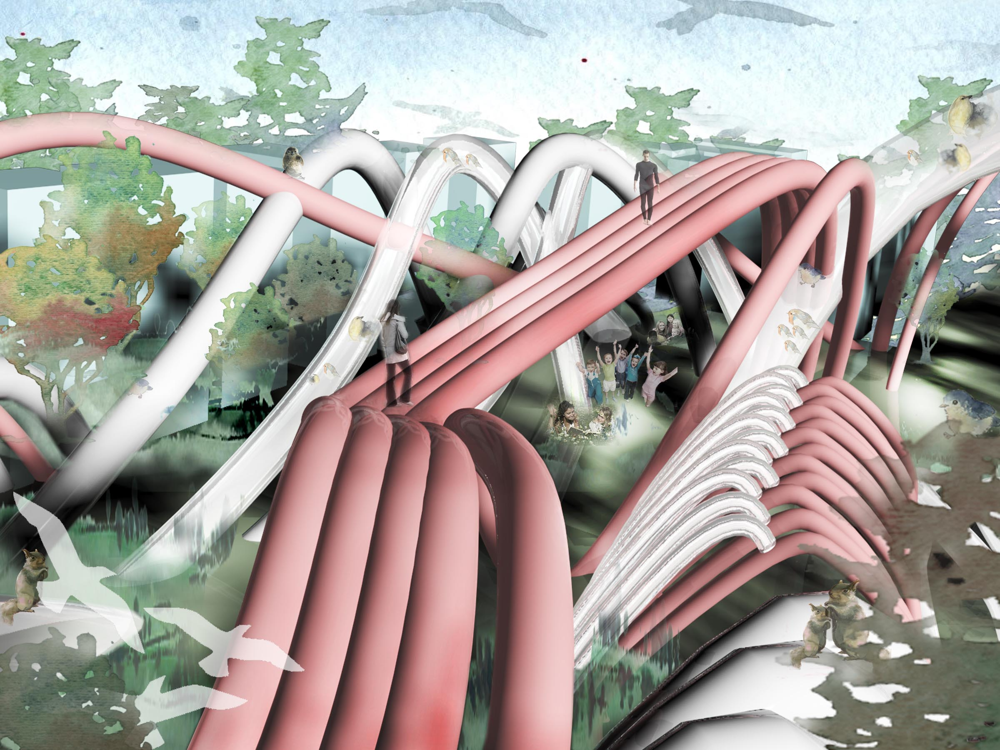

NARRATIVE
Infrastructure has been mostly accepted as things working somewhat invisibly(literally or perceptually) for a long time. This strategy, reverses our typical idea of infrastructure as something hidden or virtually invisible in order to create new productive and experiential conditions in the city. Experimentally sited on a public park, this rethinking of infrastructure allows for the construction of a park that offers several new and beneficial conditions for the city's residents.
This infrastructure of pipes consists of various sizes , materials and forms which are geared to the development of new programmatic possibilities in the park. Wider diameters can be used as pathways/ corridors for people or animals; those with narrow diameters cleanse water , support the planting system and eject mist to create cool microclimate in the heat of summer. Moreover, serve as the structure for greenhouses or simply aesthetic architectural structures. In some areas, traditional pipe- forms merge to become surfaces which may be programmed as special planting areas, sky walks, recreational facilities or shelter from the elements. That depends on the height and the way those pipes are merged and organized. Formally, the pipe structure appears highly unified while simultaneously allowing for great diversity in program and experience.
Programmatically, several kinds of micro climate are created which extend the usage(both users and time span) of park in times of inclement weather. Ecologically, it has related beneficial programs such as vegetable production, hydroponically grown plant materials, storm and grey water decontamination and air cleansing to name only a few. Additionally, various sized holes on different parts of the structure provide new habitat for urban fauna and further aid in increasing the biodiversity of our cities. Experientially, sky walks, paths under corridors, paths through tunnel- form pipes and many other structures allow people to understand and enjoy this space in various levels and dimensions.